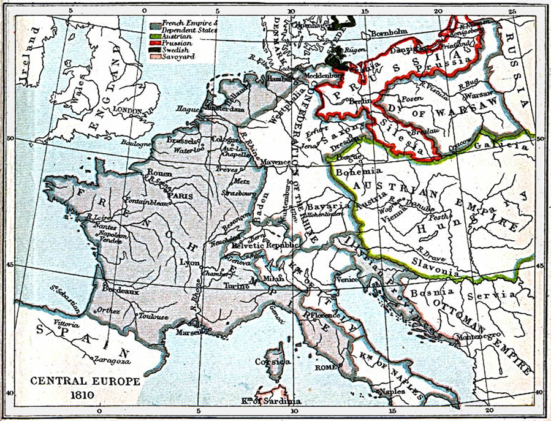
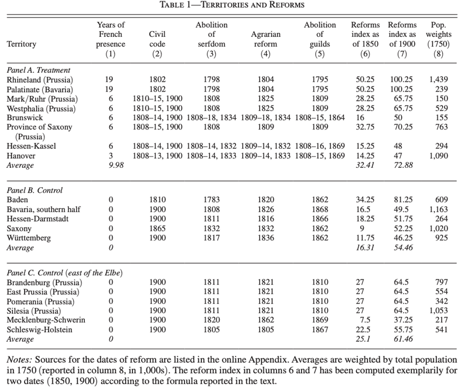

Acemogluetal|基于外部势力的激进变革能取得成效吗？来自法国大革命的证据
收录于合集
#国家建构与国家发展 70 个
#比较政治学 121 个
#历史政治学 58 个
文献来源：
Acemoglu, D., Cantoni, D., Johnson, S., & Robinson, J. A. (2011). The Consequences of Radical Reform: The French Revolution. American Economic Review , 101(7), 3286-3307.
**作者简介：
**
****Daron Acemoglu, 麻省理工学院经济学系教授；Davide Cantoni, 慕尼黑大学经济学和经济史教授；Simon Johnson， 麻省理工学院管理学院教授；James A. Robinson，时任哈佛大学政府系教授，现任芝加哥大学哈里斯公共政策学院教授。
****法国大革命的制度变革和拿破仑的军事征服一度让法国称霸欧洲。法国军队不仅在欧洲吞并土地、设置卫星国、附庸国还广泛输出法国革命后的政治社会体制。在法国势力扫荡欧洲的二十余年间（1790-1815），法国占领区及附庸国同时推行着激进、重磅且有目的的大规模变革。例如推行拿破仑民法典、废除行会制度、清扫封建制残余、削弱贵族的法律特权等等。以法国大革命为主要历史背景，以德意志各州/诸侯国为主要观察对象，本文主要检验了基于外部势力的激进变革具有何种经济影响。

历史背景回顾：旧制度与大变革
在法国大革命之前，欧洲主要受两类寡头所统治。一是农村的土地贵族，二是控制商业和各种职业行会的城市寡头。在18世纪末，严格意义上的封建主义虽然已经式微，但乡村仍有不自由的劳动关系。例如在莱茵兰地区（最先被法国占领的德国领土）就存在着农奴制残余，贵族和神职人员仍然享有各种各样的法律和税收特权。城市寡头对工业化进程更是起到了严重的阻碍作用。几乎所有的行业都被行会所控制，行会严格限制从业准入权及新技术的应用。在莱茵兰地区的主要城市，科隆和亚琛，新型纺织机的应用就因行会的存在而被显著推迟。许多城市和行业都被几个显要的家族所控制，他们限制更有能力和更有技术的竞争者参与经济生产，并凭此得以长期聚敛财富。
法国大革命后，敌视革命政权的欧陆各国成立了反法联盟，出乎意料的是，法军在防御性的战争中接连取得胜利。在确立大规模征兵制后，法国已经成为了欧陆的军事霸权国家。通过一连串的军事胜利，法军很快控制了今天的比利时、荷兰和瑞士的土地。在德意志方面，法国于1792年率先占领莱茵兰地区，并在1802年将此地正式并入法国。在南方战线，拿破仑率领的远征军在意大利予取予求。在拿破仑主政的法兰西帝国时代，法国在欧洲的势力范围进一步扩大。在德意志地区，除普鲁士外，大多数受法国保护的德意志诸侯国脱离神圣罗马帝国成立了莱茵邦联。与此同时，拿破仑还将德意志西北部地区设置为法国附庸下的卫星国，诸如贝格侯国、威斯特伐利亚王国和法兰克福侯国。在1810年，法国又将德意志北部的汉堡、吕贝克和不来梅等地区直接并入法国。
在法国大革命时期，法军在占领地区就推行了深刻的反封建制度变革。以莱茵兰为例，该地原有的领主体制被废除，行会制度也宣告终结。拿破仑虽然成为了新的帝王，但他仍十分重视输出法国的治理模式，大革命时期法国对占领区和附庸国所推行的制度变革在拿破仑时期得到了进一步深化。对于拿破仑来说，输出法国的体制变革是因其与早期革命者有共同的意识形态承诺，同时，他也将深化制度变革作为压制地方精英强化直接统治的手段。
在莱茵兰地区，拿破仑民法典的引入不仅让莱茵兰拥有了最先进的法律体系，而且让政府体制与工业化社会的发展相适应。这样的变革使莱茵兰从寡头统治下解放出来，工商业资产阶级取代传统寡头在各级政府中得到了充分的代表。在德意志地区的其他法国卫星国，改革也得到了系统性的推进。在威斯特伐利亚王国，所有的封建法律残余与领主体制、教会法庭等一同在1808年的第一个月消失了。改革推行之后，在法律上，人人都是平等的。
在1815年拿破仑战败后，法国革命以来25年制度变革的成果在各地的命运各不相同。在德意志西部及南部，制度变革的成果多数得以扎根，而在其他地区，例如汉诺威、布伦瑞克、黑森- 卡塞尔等地，旧王朝复辟也带回了他们合法性所依赖的旧制度，大多数改革走了回头路。
**** 实证分析
为了验证法国大革命及拿破仑战争时期，由法国所主导的激进变革对德意志各地的长期经济影响，本文收集了19个德意志地区的政治单位的数据以进行实证分析。
作者以城市化水平作为经济繁荣程度的测量指标。在19世纪，城市化的发展意味着工业活动的繁荣和经济剩余的增加。为了体现法国的影响，本文使用了1792-1815年间处于法国直接控制或处于法国附庸国地位的年份数作为指标。在19个政治单位中，有8个地区受到了法国的直接影响，属于被试组(treatment group)。其余11个地区受法国控制年份数为0，属于控制组。在描述性统计中，1789年前，被试组与控制组在城市化发展上基本处于平行趋势。为了测量德意志地区的制度变革，本文主要关注四项主要变革：民法典的引入、农奴制的废除、农业改革和行会制度的废除。根据改革的时机及推行的时间年份，作者在1850、1900两个时间节点形成了改革的影响指数。例如在1850年布伦瑞克，施行拿破仑民法典的时间是6年，农奴制被废除了26年，农业改革进行了25年，行会制度废除的时间是7年，因此其改革指数是（6+25+26+7）/4=16。这一指数能够直观地反映变革的深入程度与巩固状况。
相关变量见下表：

随后，作者对相关数据进行了回归分析。通过OLS回归可以发现，在1850年前，制度变革对城市化发展的作用在统计上并不显著。这说明军事占领虽然带动了制度变革，但在短期内，军事破坏和掠夺对经济的负面作用更加显著。在1850年之后，制度变革对城市化发展，也即经济发展呈现出显著的正相关关系。简约的OLS回归虽然直观但仍存在一些问题。比如没有被法国直接控制的巴登和普鲁士诸州也进行了制度变革，这难以解释为法国所主导的激进变革。在一些地区，制度变革是为了强化国家实力防御法国进攻的手段。为了解决因果机制不清及相关的内生性问题，作者以法国占领年份作为关联制度变革的工具变量，形成了一个2SLS回归。在2SLS回归结果中，作者的主要结论依然得到了验证，法国在其占领和附庸区域强制推行的激进制度变革促进相关区域的长期经济发展。
结论与讨论
通过准自然实验的研究设计，本文的研究发现，法国在大革命和拿破仑战争期间输出的激进变革对受影响区域的经济发展产生了积极影响。学界对于外生、激进的制度变革往往呈悲观态度。本文的研究认为，法国大革命时期的制度输出就是一个反例。这也说明封建的土地所有制、劳动关系、行会制度和法律上平等权的缺乏的的确确阻碍了经济的繁荣。这些正是法国革命的矛头所向。法国革命时期制度变革的成功在某种程度上类似于战后德国和日本的制度变革。本文的研究结果带来了这样一个问题：为什么大多数外部施加的制度变革都走向了失败？
编译：赵德昊 审校：杨端程 编辑：高小茜